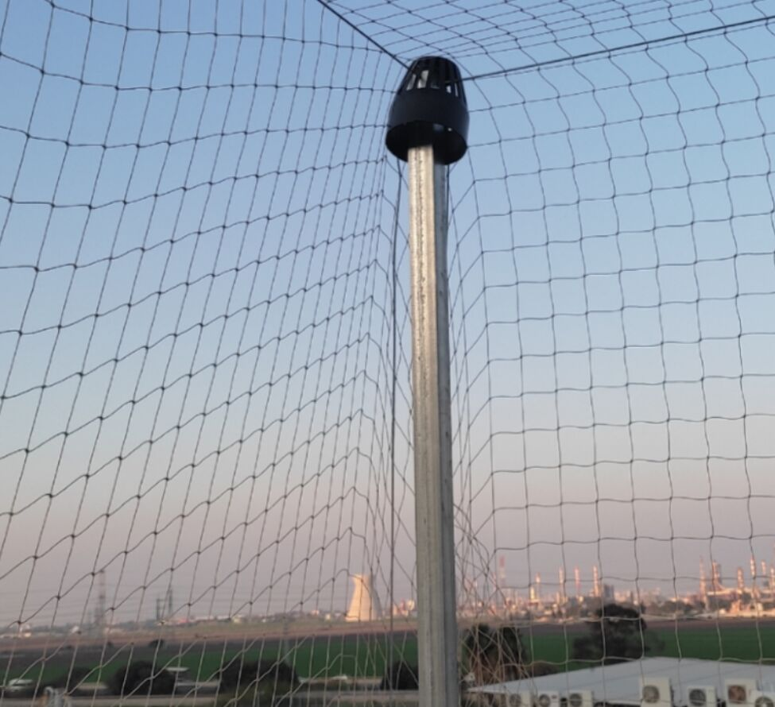
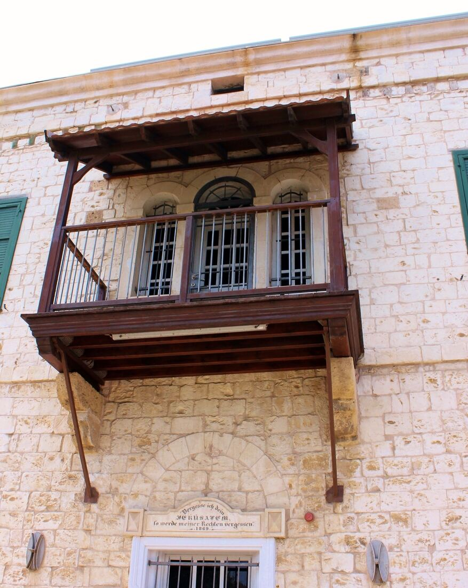
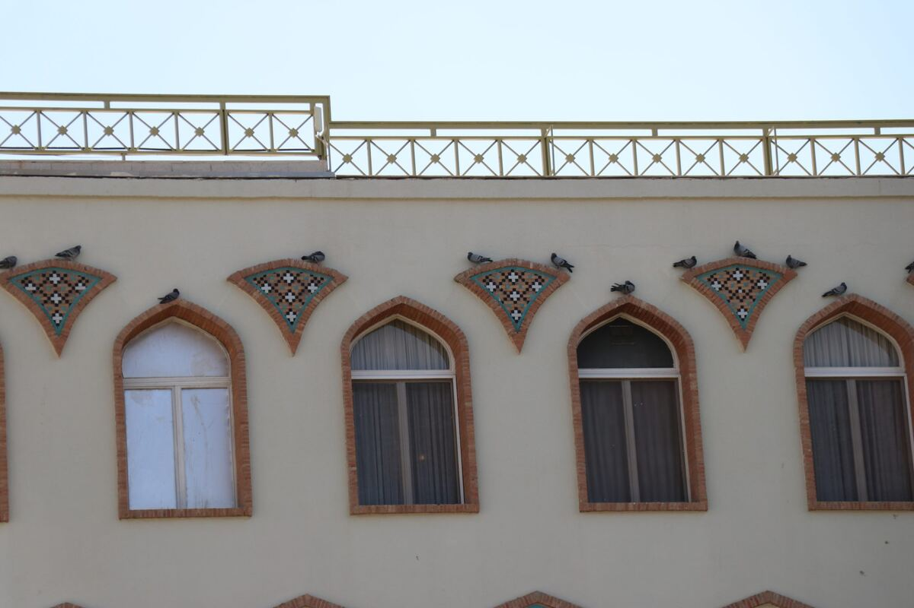
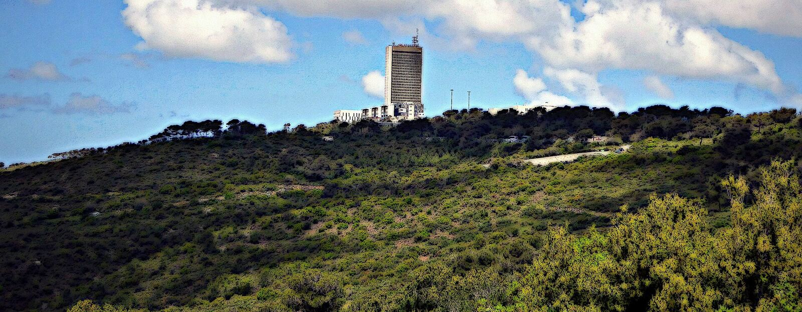

מעבודה של מאיר · רשת נגד יוניםFrom Meir’s work · an anti-pigeon net
השקט חוזר למרפסת Quiet comes back to the balcony
המדביר הירוק חיפה: מאיר מגיע, מזהה את הבעיה ומטפל בה מהשורש.The Green Exterminator Haifa: Meir comes over, finds the problem and treats it at the root.
…
בתמונה: מעבודה של מאיר, רשת נגד יוניםIn the photo: Meir’s work, an anti-pigeon net
קודם מסתכלים.First, a careful look.
מאיר מזהה את הבעיה, ומטפל בה מהשורש.Meir finds the problem, then treats it at the root.
- פתח הצנרתThe pipe opening
- הפינה והפאנלThe corner and skirting
- מתחת לארונותUnder the cabinets
- מסגרת החלוןThe window frame
מסביר לפני, מנחה אחרי.Explains before. Guides after.
כך נראית עבודה עם מאיר, מהצד שלכם.What working with Meir looks like, from your side.
-
מגיע בזמןOn time
בשעה שקבעתם.When you agreed.
-
מסביר לפני שמתחילExplains first
מה מצא ומה יעשה.What he found, what he’ll do.
-
טיפול מהשורשAt the root
ולפעמים טיפול נוסף, ליתר ביטחון.Sometimes an extra treatment too.
-
הנחיות מפורטות אחריClear instructions after
כדי שתדעו מה לעשות.So you know what to do next.
-
גם בביתAround the house
פוליש קריסטל לרצפה, התקנת גופי תאורה.Crystal floor polishing, light fittings.
רשת מתוחה, המרפסת שוב שלכם.A taut net. Your balcony back.
רשתות ודוקרנים נגד יונים, גם כשהעבודה מורכבת.Nets and spikes against pigeons, even when the job is complex.
המרפסת חזרה אליכם.The balcony is yours again.
…
מהגג ועד הגינה.From the roof to the garden.
המרפסות, הגגות והירוק של חיפה.Haifa’s balconies, rooftops and green.



5.0 מ-11 ביקורות from 11 reviews
״מאיר עשה אצלינו עבודה מאד מורכבת של הרחקת יונים. איש מקצוע משכמו ומעלה, מקצועי, הגון, ישר ואדם מקסים.״“Meir did a very complex pigeon-deterrence job for us. A true professional: skilled, decent, honest and a lovely person.”
״מאיר, איש מקצוע מהמעלה הראשונה, הגיע בזמן, זיהה את הבעיה, ואפילו הוסיף טיפול נוסף על מנת לפתור את הבעיה מהשורש. מומלץ ביותר.״“Meir is a first-rate professional. He arrived on time, identified the problem, and even added an extra treatment to solve it at the root. Highly recommended.”
״נתן שירות מעולה, אדיב ושירותי. איש מקצוע לעילא. הסביר לפני שביצע, וגם נתן הנחיות מפורטות לאחר מכן. כיף לקבל שירות כל כך לבבי ואכפתי.״“Excellent, courteous service. A superb professional. He explained before doing the work and gave detailed instructions afterwards. Such warm, caring service.”
ספרו למאיר.Tell Meir.
מה, איפה ומתי. ההודעה מוכנה בוואטסאפ.What, where and when. The message is ready in WhatsApp.
ההסתדרות 72, חיפה.72 HaHistadrut, Haifa.
…